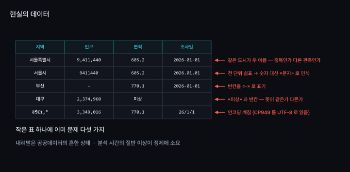
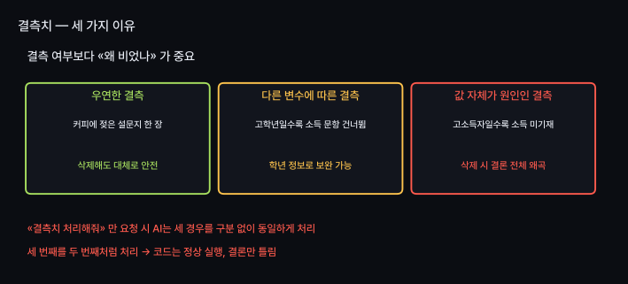
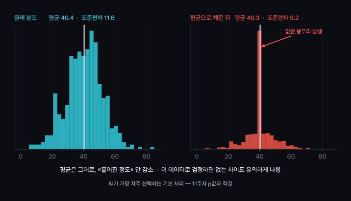
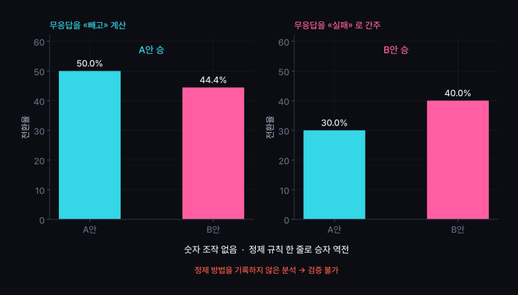
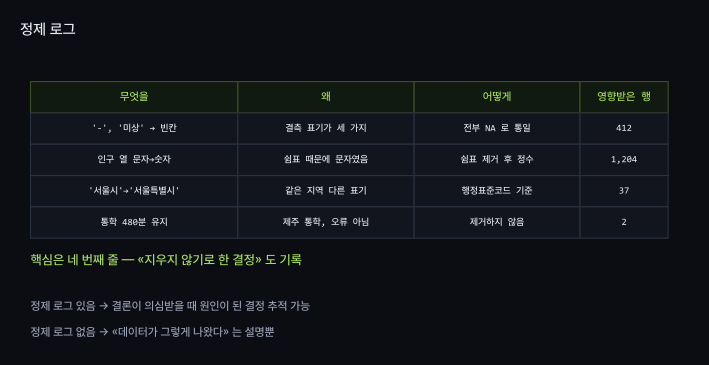

결측치·중복·오류 처리, 바이브코딩으로 데이터 다루기
빈칸·중복·깨진 글자·문자가 된 숫자를 식별하고 수정
정제 = 결론을 바꾸는 결정
요청하지 않아도 AI가 알리지 않고 채우고 삭제
분석 시간의 절반 이상 소요
이 단계가 결과의 신뢰도 결정

| 화면에 보이는 값 | 실제 자료형 | 발생하는 문제 |
|---|---|---|
9,411,440 | 문자 | 합계 계산 시 오류 또는 이상한 값 |
12% | 문자 | 0.12 인지 12 인지 모르는 채로 계산 |
2026.01.01 | 문자 | 날짜가 사전순으로 정렬 |
001 | 숫자로 읽힐 경우 | 앞의 0 이 사라져 1 로 변환 — 우편번호·학번 사고 |
엑셀로 CSV 열기 주의
여는 순간 학번 앞자리 0 삭제, 날짜 형식 임의 변경 → 그 상태로 저장
글자 깨짐의 원인 : 데이터 손상 없음
읽는 방식의 오류
국내 공공기관 파일 : 아직 CP949(EUC-KR) 저장이 많음
최신 도구 : 기본값 UTF-8 로 읽기 시도
AI에게 "인코딩을 cp949 로 지정해서 읽어줘" 한 줄이면 해결
이 용어를 모르면 30분 소요


확인할 점 : 평균은 거의 그대로 · 표준편차만 감소
같은 사람의 두 번 응답 → 삭제
같은 사람의 두 학기 수강 → 삭제 불가
완전히 같은 행인지, 키만 같은지 먼저 확인
통학시간 480분
· 입력 오류?
· 실제 제주 통학?
원본 확인 전 삭제 불가
이상치 탐지 방법 : 5주차(z-점수)
오늘의 주제 : 발견 후 처리 방법
정제 = 결정 → 결정 내용 기록 필요

정제 규칙은 분석 전에 결정,
그대로 기록
결과 확인 후 정제 규칙 변경 → 원하는 답 찾기
10~11주차 A/B 테스트에서 더 심각한 형태로 재등장

AI에게 정제 요청 · 수행한 작업 전체 보고 요구
[목표]
지난주 내려받은 CSV 의 문제를 «진단만» 한다.
[제약]
- 아무것도 고치지 말 것. 채우지도, 지우지도 말 것
- 원본 파일을 덮어쓰지 말 것
[검증 조건]
- 열별로: 자료형 / 결측 개수 / 고유값 개수 를 표로
- 결측이 있는 열은 «어떤 값으로 표시되어 있는지» 실제 예시를 보여줄 것
(빈칸인지, '-' 인지, '미상' 인지)
- 완전히 동일한 행이 몇 개인지
- 처리 전 행 수를 맨 위에 출력할 것
[비목표]
- 정제, 그래프, 통계 분석
이번 주의 핵심 : [제약]의 첫 줄
진단과 처리의 분리 = 데이터 분석의 기본기
| # | 실습 | 확인할 개념 |
|---|---|---|
| 1 | 위 명세로 진단만 요청 · AI의 무단 수정 여부를 행 수로 확인 | AI 함정 #2 |
| 2 | 결측이 있는 열 하나 선택 · 비어 있는 이유가 세 가지 중 무엇인지 판단 | 결측의 이유 |
| 3 | 해당 열을 ① 행 삭제 와 ② 평균 대치 두 방법으로 각각 처리 · 평균과 표준편차 비교 | 정제에 따른 수치 변화 |
| 4 | 내린 결정을 정제 로그로 기록 — 삭제하지 않기로 한 결정도 포함 | 재현 가능성 |
| 5 | 인코딩이 깨진 파일을 일부러 만든 뒤 cp949 로 복원 (확장) |
인코딩 |
오늘의 핵심 : 3번에서 두 방법의 수치 차이 직접 확인
| 개념 | 핵심 |
|---|---|
| 자료형 | 쉼표·%·앞자리 0 — 숫자처럼 보여도 문자 · 엑셀로 CSV 열기 주의 |
| 인코딩 | 글자 깨짐 = 데이터 손상 대신 읽는 방식의 오류 · cp949 |
| 결측 | «비었다»보다 «왜 비었나»가 중요 · 세 경우를 같게 처리하면 결론 왜곡 |
| 평균 대치 | 평균은 유지, 표준편차만 감소 → 없는 차이가 유의하게 나타남 |
| 중복·이상치 | 삭제 전 원본 확인 · 480분은 오류 또는 제주 통학 |
| 정제 규칙 | 규칙 한 줄에 따라 승자 변경 · 결과를 보고 규칙 변경 시 «답 찾기» |
| 정제 로그 | 기록 없는 분석은 검증 불가 · 삭제하지 않기로 한 결정도 기록 |
| AI 함정 #2 | 요청 없이도 채우고 삭제 → 진단과 처리의 분리 |
평균·중앙값·분산·표준편차
오늘 확인한 «표준편차 감소» 의
정확한 의미